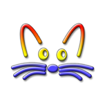

Smalltalk in your browserRun Squeak, Pharo and Cuis images right in the browser — pure JavaScript, powered by SqueakJS (the engine by Vanessa Freudenberg) with a Web-Worker runtime and usability additions by Agustín Martínez.
Drag a Smalltalk image onto this page (together with its changes and sources files, if any) to run it.
Files are stored in your browser's database; clicking a name above exports it to your Downloads.
First run downloads and caches the image in your browser; later starts are much faster. If a bundle ships both a 32- and 64-bit image, the 32-bit build is used. Cuis loads straight from its official GitHub repository. Squeak and Pharo are mirrored on dialog.ar because files.squeak.org and files.pharo.org don't send CORS headers, so browsers refuse to download from them directly.
About Pharo: both builds boot to a clean, fully interactive world. Pharo's git/Iceberg integration needs native FFI (unavailable in the browser), so SqueakJS skips that startup step instead of letting it open a debugger — Pharo simply runs without git, exactly as on a machine without libgit2. Pharo's 64-bit builds ship SDL2-only and dropped the classic display/input classes, so their bundle carries a compatibility startup.st that restores them; to run your own 64-bit image, keep that file next to it. The live Morphic demo is the 32-bit image opening a small self-contained app at startup — the full IDE stays one menu-bar click away.
This run/ launcher is the reference: copy it and point it at your image. It runs the VM in a Web Worker and wires input, cursor, clipboard, sound, save-to-Downloads and the file picker. At its core:
<canvas id="sq"></canvas>
<script type="module">
const canvas = document.getElementById("sq");
canvas.width = innerWidth; canvas.height = innerHeight;
const offscreen = canvas.transferControlToOffscreen();
const worker = new Worker("squeak_worker.js", { type: "module" });
worker.postMessage({
type: "init", canvas: offscreen,
width: canvas.width, height: canvas.height,
image: "my.image", // a URL, or the image bytes (ArrayBuffer)
name: "/my.image", // full path, including .image
}, [offscreen]);
// then forward mouse/keyboard and handle cursor/clipboard/sound —
// see run/index.html for the complete wiring.
</script>
For a classic single-thread embed you can still use SqueakJS.runSqueak("my.image", canvas, {…}) from squeak.js.
SqueakJS is free software (MIT). The engine is by Vanessa Freudenberg; the Web Worker mode and usability additions live in this fork by Agustín Martínez. Bug reports and pull requests welcome.
Have fun! — engine by Vanessa Freudenberg · usability additions by Agustín Martínez